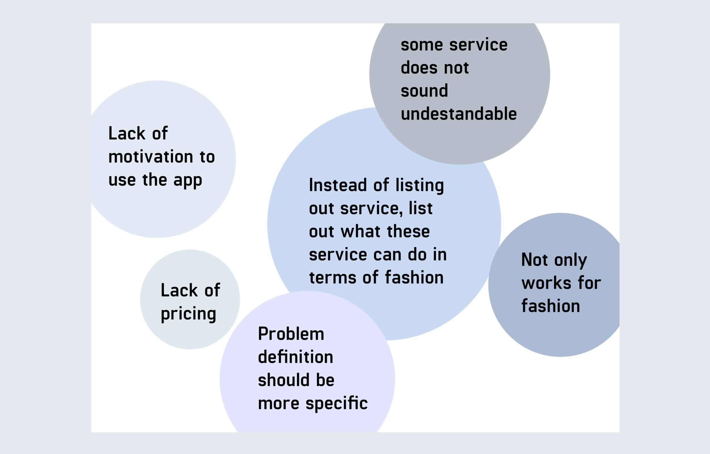

USER TESTING

FEEDBACKS

Every test has the same concern: "Will people upgrade their work system if the upgrade doesn’t save money for them?"
A site specific user experience design project that I did for DUMBO, New York. I designed a mobile app that helps fashion houses and studios to save printing costs and have positive impact on climate change at the same time.
DUMBO is strongly affected by climate change. Although it was greatly damaged by Hurricane Sandy in 2012, the neighborhood has been growing really fast. I started to interview people that work and live around the area in order to finding out how I and my project can be helpful. Among the people I talk to, Jiamin and Louis caught my attention.
Jiamin said that fashion industry in New York is a very wasteful industry, and printing is one of the major problems in her career.
"I spend a lot of time printing, especially during market week, I'll spend about 3 hours printing each day. And most of the printing works are repetitive and unnecessary."
Louis told me that tech industry is the fastest growing industry in DUMBO currently. Working as a software engineer, he provides technology solutions to his clients. I told him about Jiamin’s situation, he said the printing problem can be solved by a more advanced software.
After interviewing Jiamin and Louis, I came up with the following idea: Help the local fashion studios to eliminate the printing waste and to improve on work efficiency with the support from local tech companies.
“Most of the fashion people are still so far from technologies. We don’t know what kind of technology we need in order to improve.”
After interviewing more people that works in fashion industry in New York, this is the most common response I got when I asked them for the obstacles that are keeping them from adapting newer, more environmental friendly technologies at work. Accordingly, I came up with the initial solution:
An app that helps fashion workers to find and select the technology they need based on the problems they are having.
In this app, users will be asked about the question they want to solve and get technical solutions accordingly. Next, users will select the most suitable solution, and get a list of companies that provide the service. Finally, after browsing and comparing, the users can message the company in the app and decide which company to use.
Every test has the same concern: "Will people upgrade their work system if the upgrade doesn’t save money for them?"
The user testing revealed a lot of problems in terms of the ideology and the logical practice in my first prototype. I realized that my app will not be persuasive until I can prove that adapting new software system actually has financial benefits in addition to the environmental benefits. So I went back for more research and data.
According to the data I found online, a person will 10,000 sheets of paper and spend 725 dollars in average in office, and most of the printing work can be replaced digitally. Moreover, since fashion is a heavily visual industry, the actual amount money spent on printing will be much more in fashion industry.
On the other side, a common software service costs between 2,000 dollars and 6,000 dollars, in this case, the company will actually start saving money and enjoy financial benefits in a few years, depends on the company size.
Based on the research, I altered the my original approach to solve the problem and redefined my solution as an app that helps the fashion studios save money while helping with the climate change.
The new app is composed of 2 parts: getting a service, and tracking financial and environmental benefits.
Same as my first prototype, user will be asked to select the problem they want to solve to start off. However, new information is required in the new app, such as budget. Based on the user information, the app will provide the list of suitable tech companies with price information so that the user can have an easier and more direct experience comparing and choosing the service. Later on, after finding the most suitable company, the user can make the purchase in the app and start the saving section.
Collecting user information
Comparing and choosing company
After purchasing the ideal service, the user unlocks the tracking section. In this section, user can get data about how much printing material that has been saved each day, and the financial saving data accordingly. The data and chart can offer a clear view about the efficiency of the service by quantifying the benefits.